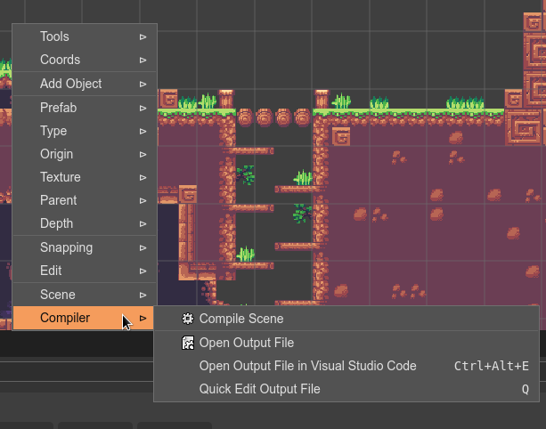

User code
The Scene Editor helps to build game levels, but it is far away to cover all aspects of a game. Especially, the game logic should be implemented by you, writing code.
In Phaser programming, it is common to see, in the same file, code to create the objects of the level (what the Scene Editor is good for) and code to handle the interaction between the objects (the game logic, that is not targeted by the Scene Editor).
We designed the scene compiler to allow you to merge the generated code with your code, in the same file.
The concept is simple:
The scene compiler creates the initial JavaScript file.
The initial file contains protected regions, where the user can insert its code. These regions are delimited by JavaScript comments like
/* START-USER-CODE */and/* END-USER-CODE */.You can insert your code inside the protected regions.
The next time the file is updated by the compiler, the user protected regions are preserved, it means, your code is not changed, only the code generated by the compiler is updated.
The scene compiler uses different comments to delimit the user code:
From the beginning of the file to the start of the
/* START OF COMPILED CODE */comment.From the end of the
/* END OF COMPILED CODE */comment to the end of the file.From the end of the
/* START-USER-IMPORT */comment to the start of the/* END-USER-IMPORT-CODE */comment.From the end of the
/* START-USER-CTR-CODE */comment to the start of the/* END-USER-CTR-CODE */comment.From the end of the
/* START-USER-CODE */comment to the start of the/* END-USER-CODE */comment.
The next image is an example. Look that you can import a MyUtils class and use it in the create() method:
Editing the generated code
The code generated by the scene compiler can be edited in an external editor (like Visual Studio Code) or using the Monaco editor that is built-in in Phaser Editor 2D.
We recommend you to read the Code Editor chapter and the Advanced JavaScript editing features section.
The Scene Editor provides two commands to quickly edit the code file generated by the scene compiler:
The Open Output File command opens the generated file in a new Code Editor, in the traditional way.
The Open Output File in VS Code (Ctrl+Alt+E) command launches a local Visual Studio Code instance (or any other configured external editor) that opens the generated file.
The Quick Edit Output File command (bound to the Q key) opens the generated file in a Code Editor that is embedded in a modal dialog. This way is perfect for quick modifications, however, intellisense and all the other Monaco editor features are enabled, so you have a similar experience in comparison with the traditional way of editing.